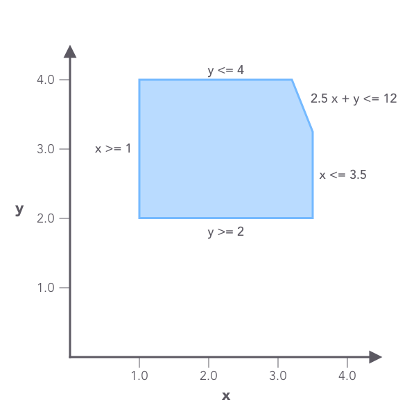
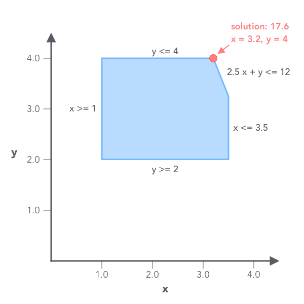

Quickstart
Linear programming¶
Linear programming (LP, or linear optimization) is a method to compute the best solution (such as maximum revenue or lowest cost) to a problem modeled as a set of linear relationships.
Linear programming can be applied many fields such as retail, transportation and manufacturing. In FreeWheel we use linear programming to solve various business and engineering problems.
A simple example¶
Here is a simple example of a linear programming problem:
The objective here is to maximize the value of \(3x + 2y\), with constriants given as linear expressions.
The three constraints defined a feasible region shown as below:

The objective here is to find a spot that maximizes \(\(3x + 2y\)\) in the above region.
Solve it with Flipy¶
The above LP problem can be easily solved with Flipy:
import flipy
# 1 <= x <= 3.5
x = flipy.LpVariable('x', low_bound=1, up_bound=3.5)
# 2 <= y <= 4
y = flipy.LpVariable('y', low_bound=2, up_bound=4)
# 5x + y <= 12
lhs = flipy.LpExpression('lhs', {x: 2.5, y: 1})
rhs = flipy.LpExpression('rhs', constant=12)
constraint = flipy.LpConstraint(lhs, 'leq', rhs)
# maximize: 3x + 2y
objective = flipy.LpObjective('test_obj', {x: 3, y: 2}, sense=flipy.Maximize)
problem = flipy.LpProblem('test', objective, [constraint])
solver = flipy.CBCSolver()
status = solver.solve(problem)
Get the solution¶
After solving, a status is returned to indicate whether the solver has found a optimal solution for the problem:
print(status)
# <SolutionStatus.Optimal: 1>
The objective value, which is the maximum of \(\(3x + 2y\)\), can be retrieved with objective.evaluate():
print(objective.evaluate())
# 17.6
The values of \(\(x\)\) and \(\(y\)\) can be retrieved as well:
print(x.evaluate())
# 3.2
print(y.evaluate())
# 4.0
